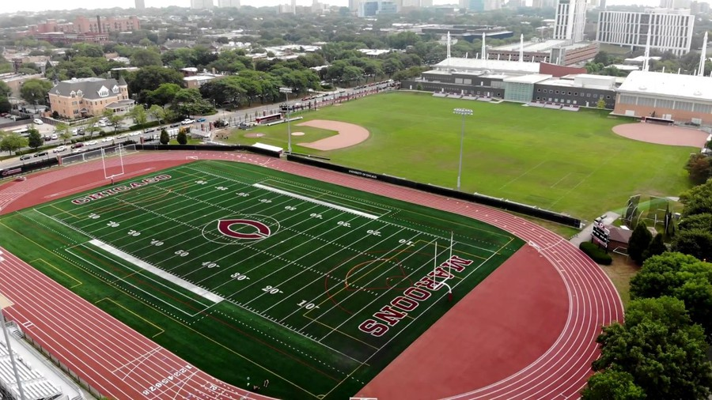
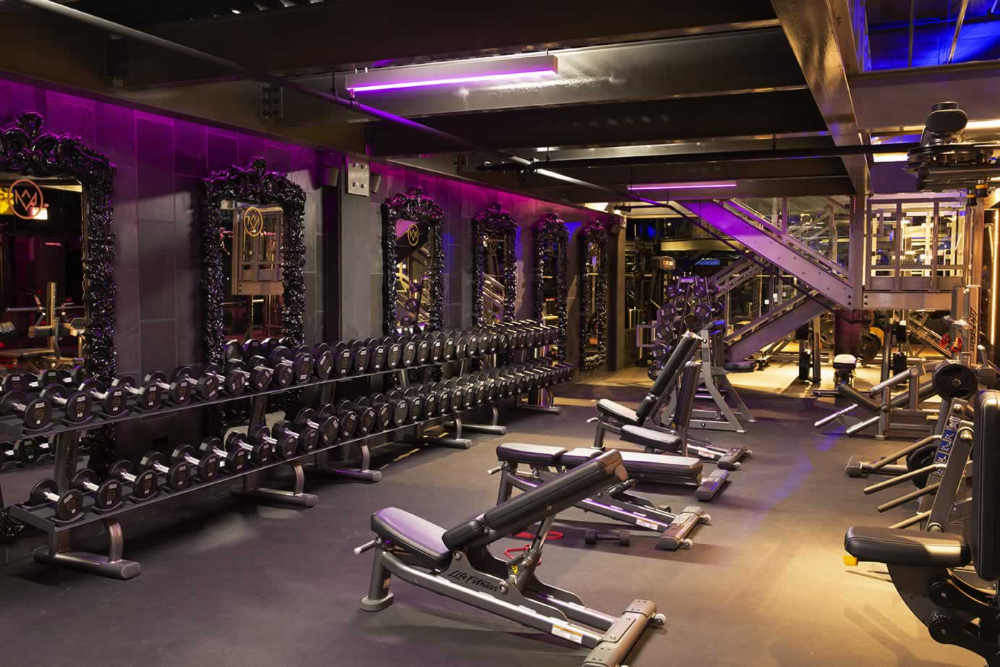

CHILDHOOD ///
My name is John, I was born in 1992 in Chicago, Illinois. Childhood passed in the courtyards of the city, he loved to work on the horizontal bars and run. From an early age I have had a passion for sports.
SCHOOL EDUCATION ///
I studied at the first school in Chicago, from an early age making an emphasis on sports. Physical education was my favorite lesson. I attended sports clubs every day, such as football, volleyball and tennis.
UNIVERSITY ///
After graduating from high school, he entered the Chicago Sports University, where he trained as a coach. He had great success, won many city competitions. I have a large number of medals.

WORK ///

Today, I work at one of Chicago's most expensive and popular gyms in the city center. I have a large number of satisfied clients who, listening to my advice, have transformed themselves in just a couple of months of proper training.